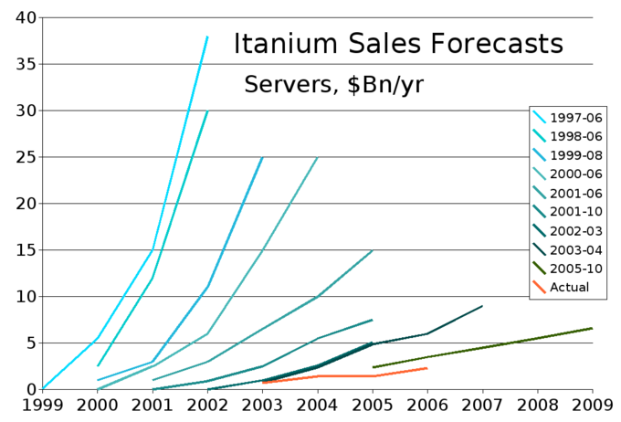
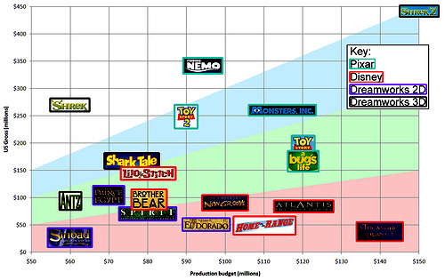
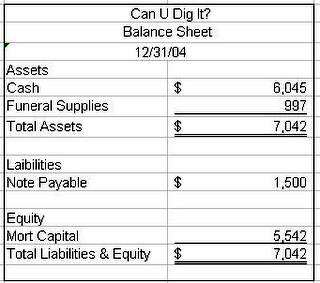
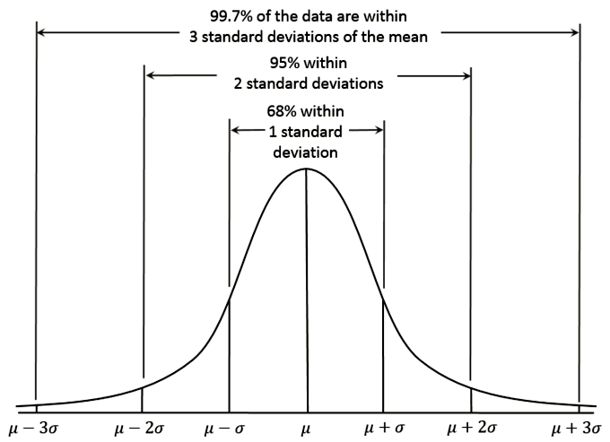
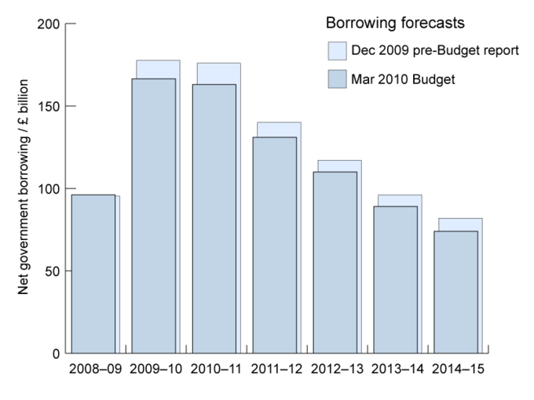
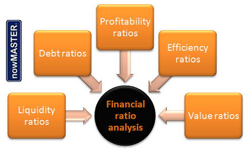
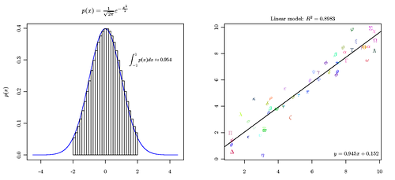

Table of Contents
4. Forecasting Financial Statements
4.1. The Role of Financial Forecasting in Planning
4.1.1. Strategic Planning
4.1.2. Additional Funds Needed (AFN)
4.1.3. Adjusting Capacity
4.2. Overview of Forecasting
4.2.1. Inputs
4.2.2. Steps Required to Forecast
4.3. Forecasting the Income Statement
4.3.1. Sales Forecast Input
4.3.2. Inputs to the Production Schedule
4.3.3. Inputs to COGS
4.3.4. Other Expenses
4.3.5. Pro Forma Income Statement
4.4. Forecasting the Balance Sheet
4.4.1. Pro Forma Balance Sheet
4.4.2. Balance Sheet Analysis
4.5. Building a Cash Budget
4.5.1. Receipts
4.5.2. Payments
4.5.3. The Forecast Budget
4.6. Analyzing Forecasts
4.6.1. Ratio Analysis and EPS
4.6.2. Impacts of Forecasting on a Business
4.6.3. Regression Analysis for Forecast Improvement
4.6.4. Impact of Modifying Inputs on Business Operations
4. Forecasting Financial Statements
4.1. The Role of Financial Forecasting in Planning
4.1.1. Strategic Planning
The financial forecast is a key input to strategic planning, a firm's process of defining strategy and making decisions about allocating resources.
Learning Objective
Explain how financial forecasting influences a company's strategic planning
Key Points
- Using historical internal accounting and sales data, in addition to external market and economic indicators, a financial forecast is an economist's best guess of what will happen to a company in financial terms over a given time period, which is usually one year.
- Financial forecasting is often helped by financial modeling processes. Financial modeling is the task of building an abstract representation (a model) of a financial decision-making situation.
- Assumptions play a key role in financial forecasts and can affect the way the forecasts predict the outcomes of decisions made on the corporate level.
Key Terms
- financial modeling
- the task of building an abstract representation (a model) of a financial decision making situation.
- financial forecast
- estimate of future financial outcomes for a company or country
- strategy
- A plan of action intended to accomplish a specific goal
Strategic Planning
Strategic planning is an organization's process of defining its strategy, or direction, and making decisions about allocating resources to pursue this strategy. In order to determine the direction of the organization, it is necessary to understand its current position and the possible avenues through which it can pursue a particular course of action.
A financial forecast is an estimate of future financial outcomes for a company. Using historical internal accounting and sales data, in addition to external market and economic indicators, a financial forecast is an economist's best guess of what will happen to a company in financial terms over a given time period—which is usually one year. Often, the forecaster's own assumptions and beliefs will be used to guess future growth rates and potential events that will affect the numbers on a financial statement.
Arguably, the most difficult aspect of preparing a financial forecast is predicting revenue. Future costs can be estimated by using historical accounting data; variable costs are also a function of sales. Unlike a financial plan or a budget, a financial forecast doesn't have to be used as a planning document. Outside analysts can use a financial forecast to estimate a company's success in the coming year.
Financial forecasting is often helped by processes of financial modeling. Financial modeling is the task of building an abstract representation (a model) of a financial decision making situation. This is a mathematical model designed to represent a simplified version of the performance of a financial asset or portfolio of a business, project, or any other investment. Financial modeling is a general term that means different things to different users; the reference usually relates either to accounting and corporate finance applications, or to quantitative finance applications.Typically, financial modelling is understood to mean an exercise in either asset pricing or corporate finance, of a quantitative nature. In other words, financial modelling is about translating a set of hypotheses about the behavior of markets or agents into numerical predictions; for example, a firm's decisions about investments or investment returns. Once again, these are assumptions that will factor into the financial forecasting and planning for the corporation. Once the financial statements are forecast, one can attach a value to the firm, and see what changes need to be made to put the company in a better financial position.
4.1.2. Additional Funds Needed (AFN)
AFN is "additional funds needed," and refers to the additional resources that will be needed for a company to expand its operations.
Learning Objective
Calculate the additional funds needed equation
Key Points
- AFN is a way of calculating how much new funding will be required, so that the firm can realistically look at whether or not they will be able to generate the additional funding and therefore be able to achieve the higher sales level.
- The simplified formula is: AFN = Projected increase in assets – spontaneous increase in liabilities – any increase in retained earnings. If this value is negative, this means the action or project which is being undertaken will generate extra income for the company, which can be invested elsewhere.
- The mathematical formulas used to determine AFN are based on showing how liabilities will grow relative to new assets and sales when a project is undertaken and can be used as tools to determine whether a project or operational expansion is worthwhile.
Key Terms
- liabilities
- An amount of money in a company that is owed to someone and has to be paid in the future, such as tax, debt, interest, and mortgage payments.
- asset
- Something or someone of any value; any portion of one's property or effects so considered.
- sales
- Revenues
AFN stands for "additional funds needed. " It is a concept used most commonly in business looking to expand operations and influence. Since a business that seeks to increase its sales level will require more assets to meet that goal, some provision must be made to accommodate the change in assets . To phrase it another way, the business must have some plan to actually finance the new assets that will be needed to increase sales. AFN determines the extra assets and financing that will be needed for a firm to undertake a new project or expand its operations and sales.
AFN is a way of calculating how much new funding will be required, so that the firm can realistically look at whether or not they will be able to generate the additional funding and therefore be able to achieve the higher sales level. Determining the amount of external funding needed is a key part of calculating AFN. This can be determined by mathematical formulas which use inputs that can be found in a company's financial statements.
The simplified formula is:
AFN = Projected increase in assets – spontaneous increase in liabilities – any increase in retained earnings.
If this value is negative, this means the action or project which is being undertaken will generate extra income for the company, which can be invested elsewhere.
The more formal equation for AFN is
AFN = (A*/S0)ΔS – (L*/S0)ΔS – MS1(RR)
- A- Assets tied directly to sales
- L-spontaneous liabilities that are affected by sales
- S0=the previous year's sales
- S1=total projected sales for next year
- ΔS=the change in sales between S0 and S1
- M=profit margin
- MS1=projected net income
- RR=the retention ratio from net income (equal to 1 minus the dividend payout ratio; disregard if dividends are not declared).
4.1.3. Adjusting Capacity
Capacity adjustment takes into account maximum production levels and the alteration of this level depending on how the firm wants to grow.
Learning Objective
Calculate a company's capacity using a variety of information
Key Points
- Capacity planning is the process of determining the production capacity needed by an organization to meet changing demands for its products.
- Capacity utilization is a concept in economics and managerial accounting which refers to the extent to which an enterprise or a nation actually uses its installed productive capacity.
- When planning out how to manage capacity at the optimal level to attain the long term goals of the firm, capacity planning and utilization and other processes should be analyzed.
Key Terms
- capacity
- The maximum that can be produced on a machine or in a facility or group.
- capitalism
- A socio-economic system based on private property rights, including the private ownership of resources or capital, with economic decisions made largely through the operation of a market unregulated by the state.
- forecast
- An estimation of a future condition.
Adjusting capacity takes into account the maximum level of output that can be produced by a firm, and how that can be changed in order to change the potential forecasts of a firm's performance long term . This involves capacity planning and management that will keep a firm from growing too fast in sales and making sure it is utilizing capital in the most efficient way possible. Capacity planning is the process of determining the production capacity needed by an organization to meet changing demands for its products. In the context of capacity planning, "design capacity" is the maximum amount of work that an organization is capable of completing in a given period. "Effective capacity" is the maximum amount of work that an organization is capable of completing in a given period due to constraints such as quality problems, delays, material handling, etc. Adjusting capacity will affect the amount of items produced on the assembly line.
Capacity utilization is a concept in economics and managerial accounting that refers to the extent to which an enterprise or a nation actually uses its installed productive capacity. Therefore, it refers to the relationship between actual output that 'is' produced with the installed equipment and the potential output which 'could' be produced with it, if capacity was fully used. Implicitly, the capacity utilization rate is also an indicator of how efficiently the factors of production are being used. Much statistical and anecdotal evidence shows that many industries in the developed capitalist economies suffer from chronic excess capacity. Therefore, critics of market capitalism argue the system is not as efficient as it may seem, since at least 1/5 more output could be produced and sold, if buying power was better distributed. However, a level of utilization somewhat below the maximum prevails, regardless of economic conditions. As a result, we look into capacity utilization to forecast a firm's success and growth numbers when predicting how financial statements will look into the future. The decision makers at the firm will be able to adjust this capacity in order to grow the firm in a way they feel is optimal.
4.2. Overview of Forecasting
4.2.1. Inputs
The main inputs of forecasting include time series, cross-sectional and longitudinal data, or using judgmental methods.
Learning Objective
Describe the different forecasting methods
Key Points
- Forecasting is the process of making statements about events whose actual outcomes (typically) have not yet been observed.
- Time series is a sequence of data points, measured typically at successive time instants spaced at uniform time intervals.
- Cross-sectional data refers to data collected by observing many subjects at the same point of time, or without regard to differences in time.
- A longitudinal data involves repeated observations of the same variables over long periods of time — often many decades.
- Judgmental forecasting methods incorporate intuitive judgements, opinions and subjective probability estimates.
Key Terms
- nonprobability sample
- a subset of the population in which the probability of getting any particular sample may be calculated, and therefore cannot be used to represent the whole population
- Dow Jones index
- It is an index that shows how 30 large publicly-owned companies based in the United States have traded during a standard trading session in the stock market.
- probability sample
- a technique of studying a population subset in which the liklihood of getting any particular subset may be calculated
Forecasting in Accounting
In corporate finance, investment banking, and the accounting profession, financial modeling is largely synonymous with cash flow forecasting.
This usually involves the preparation of detailed company specific models used for decision making purposes and financial analysis.
A financial forecast is an estimate of future financial outcomes for a company or country (for futures and currency markets). Using historical internal accounting and sales data, in addition to external market and economic indicators, a financial forecast is an economist's best guess of what will happen to a company in financial terms over a given time period—usually one year.
Challenges
Arguably, the most difficult aspect of preparing a financial forecast is predicting revenue. Future costs can be estimated by using historical accounting data; variable costs are also a function of sales.
Forecasting vs. Financial Plans and Budgets
Unlike a financial plan or a budget, a financial forecast doesn't have to be used as a planning document. Outside analysts can use a financial forecast to estimate a company's success in the coming year.
Forecasting is the process of making statements about events whose actual outcomes (typically) have not yet been observed. A commonplace example might be the estimation of some variable of interest at some specified future date. Prediction is a similar, but more general term. Both might refer to formal statistical methods employing time series, cross-sectional or longitudinal data, or less formal judgmental methods.
Time Series Data
Time series is a sequence of data points, measured typically at successive time instants and spaced at uniform time intervals. Examples of time series are the daily closing value of the Dow Jones index or the annual flow volume of the Nile River at Aswan. Time series analysis comprises methods for analyzing time series data in order to extract meaningful statistics and other characteristics of the data. Time series forecasting is the use of a model to predict future values based on previously observed values. Time series are very frequently plotted via line charts.
Cross-sectional data
Cross-sectional data refers to data collected by observing many subjects (such as individuals, firms or countries/regions) at the same point in time, or without regard to differences in time. Analysis of cross-sectional data usually consists of comparing the differences among the subjects.
For example, if we want to measure current obesity levels in a population, we could randomly draw a sample of 1,000 people from the population (also known as a cross section of that population), measure their weight and height, and calculate what percentage of that sample is categorized as obese. For example, 30% of our sample may be categorized as obese based on our measures. This cross-sectional sample provides us with a snapshot of that population, at that one point in time. Note that we do not know based on one cross-sectional sample if obesity is increasing or decreasing; we can only describe the current proportion. Cross-sectional data differs from time series data also known as longitudinal data, which follows one subject's changes over the course of time. Another variant, panel data (or time-series cross-sectional (TSCS) data), combines both and looks at multiple subjects and how they change over the course of time. Panel analysis uses panel data to examine changes in variables over time and differences in variables between subjects.
Longitudinal Data
A longitudinal study is a correlational research study that involves repeated observations of the same variables over long periods of time — often many decades. It is a type of observational study. Longitudinal studies are often used in psychology to study developmental trends across the life span, and in sociology to study life events throughout lifetimes or generations. The reason for this is that unlike cross-sectional studies, in which different individuals with same characteristics are compared, longitudinal studies track the same people, and therefore the differences observed in those people are less likely to be the result of cultural differences across generations. Because of this benefit, longitudinal studies make observing changes more accurate, and they are applied in various other fields. In medicine, the design is used to uncover predictors of certain diseases. In advertising, the design is used to identify the changes that adverts have produced in the attitudes and behaviors of those within the target audience who have seen the advertising campaign.
Judgmental methods
Judgmental forecasting methods incorporate intuitive judgements, opinions and subjective probability estimates, such as Composite forecasts, Delphi method, Forecast by analogy, Scenario building, Statistical surveys and Technology forecasting.
Usage of forecasting can differ between areas of application: for example, in hydrology, the terms "forecast" and "forecasting" are sometimes reserved for estimates of values at certain specific future times, while the term "prediction" is used for more general estimates, such as the number of times floods will occur over a long period.
4.2.2. Steps Required to Forecast
Steps of forecast include problem definition, cash flow forecast, profit forecast, balance sheet forecast and profit determination.
Learning Objective
Describe the process for performing a forecast
Key Points
- It is important to note those earlier identified 'threats' to your business to ensure that as you forecast you can see the deviation of the best and worst models.
- Three key forecasts include problem definition, cash flow forecast, profit forecast, and balance sheet forecast.
- By completing these scenarios you gain an insight into the various risks that a business faces.
Key Term
- taxable income
- Taxable income refers to the base upon which an income tax system imposes tax.
Example
- For example, if a business has previously identified the threat of a diminishing cheap labor force, then its forecast needs to reflect that the price of labor (or any other resource, such as power) is going to go up.
Problem definition
It is important to note those earlier identified 'threats' to your business to ensure that, as you forecast, you can see the deviation of the best and worst models. For example, if a business has previously identified the threat of a diminishing cheap labor force, then its forecast needs to reflect that the price of labor (or any other resource, such as power) is going to go up.
Three key forecasts
Cash flow forecast
This seeks to forecast a bank balance after a period – typically 12 months. This forecast shows the sources and application of funds.
Profit forecast
This modifies the cash flow in an attempt to calculate taxable income and, in the process, forecast a businesses income tax liability. There are two differences between a cash flow and a profit forecast. The cash flow forecast includes all expenditure in the period, whereas the profit forecast looks to match revenue with the costs associated with generating that revenue. To achieve this, one uses non-cash expenses to estimate some of the costs associated with running a business.
These two forecasts are reconciled with a forecast balance sheet.
Balance sheet forecast
While we have based this example on a smaller business and, while forecasting balance sheets demonstrates completeness and a high level of technical integrity in forecasting, we feel the process is complex and better left to a professional. We also feel that the additional benefit is outweighed by the costs for a small business.
It is always easier to forecast the future performance of a business if your business is already up and running as there are past trading results to look at. When a completely new venture is being planned, a certain amount of imagination is required. However, this is in no way a license to be overly optimistic.
Basic Steps
By completing these scenarios you gain an insight into the various risks that a business faces. Spreadsheet programs make this quite easy if they are well set up.
1. The sales forecast
This is the dominant influence on the performance of your business. Also, many expenses have a link to the level of activity in a business.
For existing businesses, past sales are the best predictor of future sales, for new businesses it is less simple. However, once the business is established, you will find you have a better understanding between the business's products and its markets.
The most important thing is to keep detailed records of sales as it is these that will provide you with the growing ability to forecast income accurately.
- Forecast the number of units you expect to sell
- Begin with an analysis of current performance
- Divide sales into appropriate categories
- Consider factors that affect each category
- Internal factors might include staffing changes (for service industries)
- External factors might include the impact of inflation – current relevance
- Now attempt to forecast unit sales in cash category
2. Multiply by unit price
3. Determine market price
4. Cost plus
- Expected mark-up
- Expected revenue per unit sold
- Statistical review of the market
- Determination of units sold
- Seasonal sales pattern
- Cash flow
- Every business needs cash (sometimes called liquidity) to keep going.
- Forecasting cash flow lets us anticipate liquidity problems and helps identify solutions.
5. Profit determination
The essential difference between cash flow and profit is that cash flow includes all items of income and expense, whereas profit seeks to match income and costs related to the generation of the income in a period of time; usually 12 months.
To facilitate the calculation of profit (and hence, the income tax due) the cash flow statements were split into four sections. We now take the total of income and the operational costs into a Profit Statement. We add depreciation to the operational costs and subtract our adjusted operational costs from income. This difference will indicate a profit (where the difference is positive) or a loss (where the difference is negative).
Where there is profit, we need to then calculate income tax. This calculation depends on the legal structure adopted for the business. Where a business is registered for Goods and Services Tax, we take only the net payments and receipts into account.
It should be noted there is always a risk in new product development. Despite the time and effort put into planning the new product may not earn a significant return on investment.
4.3. Forecasting the Income Statement
4.3.1. Sales Forecast Input
Target volume, price, and contribution margin per unit are the key inputs to a sales forecast.
Learning Objective
Apply forecasting techniques to determine a company's target volume
Key Points
- Net sales are operating revenues earned by a company for selling its products or rendering its services.
- Gross sales are the sum of all sales during a time period. Net sales are gross sales minus sales returns, sales allowances, and sales discounts.
- The purpose of profit-based sales target metrics is to ensure that marketing and sales objectives mesh with profit targets.
Key Terms
- fixed costs
- In economics, fixed costs are business expenses that are not dependent on the level of goods or services produced by the business.
- contribution margin
- In cost-volume-profit analysis, a form of management accounting, contribution margin is the marginal profit per unit sale.
Sales
Net sales are operating revenues earned by a company for selling its products or rendering its services. Also referred to as revenue, they are reported directly on the income statement as Sales or Net sales.
For financial ratios that use income statement sales values, "sales" refers to net sales, not gross sales. Sales are the unique transactions that occur in professional selling or during marketing initiatives.
The term sales in a marketing, advertising or a general business context often refers to a contract in which a buyer has agreed to purchase some products at a set time in the future. "Outstanding orders" refers to sales orders that have not been filled.
A sale is a transfer of property for money or credit. In double-entry bookkeeping, a sale of merchandise is recorded in the general journal as a debit to cash or accounts receivable and a credit to the sales account. A discount from list price might be noted if it applies to the sale (discount expense debit).
Fees for services are recorded separately from sales of merchandise, but the bookkeeping transactions for recording sales of services are similar to those for recording sales of tangible goods.
{kind=link}
An example of sales forecasting for a company over a decade.
Forecasting: Gross Sales and Net Sales
Net sales = Gross sales - (Customer discounts, returns, allowances)
Gross sales are the sum of all sales during a time period. Net sales are gross sales minus sales returns, sales allowances, and sales discounts. Gross sales do not normally appear on an income statement. The sales figures reported on an income statement are net sales.
- sales returns are refunds to customers for returned merchandise/credit notes
- debit notes
- sales journal entries non-current, current batch-processed transactions, predictive analytics in strategic management/administration/governance research metaframeworks
- sales allowances are reductions in sales price for merchandise with minor defects, the allowance agreed upon after the customer has purchased the merchandise
- sales discounts allowed are reduced payments from the customer based on invoice payment terms such as 2/10, n/30 (2% discount if paid within 10 days, net invoice total due in 30 days)
- interest received for amounts in arrears
- includes/excludes amounts capital goods & services, non-capital goods & services, input valued-added tax, with cost of non-capital goods sold
- input vat - output vat
- sales of portfolio items and capital gains taxes
- Sales Returns and Allowances and Sales Discounts are contra-revenue accounts
Sales Forecasting
In launching a program, managers often start with an idea of the dollar profit they desire and ask what sales levels will be required to reach it. Target volume is the unit sales quantity required to meet an earnings goal. Target revenue is the corresponding figure for dollar sales. Both of these metrics can be viewed as extensions of break-even analysis. Increasingly, marketers are expected to generate volumes that meet the target profits of their firm. This will often require them to revise sales targets as prices and costs change.
- Target volume: the volume of sales necessary to generate the profits specified in a company's plans.
- Target Volume = [Fixed costs + Target Profits] / Contribution per Unit
- The formula for target volume will be familiar to those who have performed break-even analysis. The only change is to add the required profit target to the fixed costs. From another perspective, the break-even volume equation can be viewed as a special case of the general target volume calculation — one in which the profit target is zero, and a company seeks only to cover its fixed costs.
- In target volume calculations, the company broadens this objective to solve for a desired profit.
- Target Revenue = Target Volume * Selling Price per Unit; or
- Target Revenue = 100 * [ { Fixed Costs + Target Profits } / Contribution Margin ]
The purpose of profit-based sales target metrics is to ensure that marketing and sales objectives mesh with profit targets. In target volume and target revenue calculations, managers go beyond break-even analysis (the point at which a company sells enough to cover its fixed costs) to determine the level of unit sales or revenues needed not only to cover a firm's costs but also to attain its profit targets.
4.3.2. Inputs to the Production Schedule
Production schedule can be divided into raw materials, work in process, finished goods and goods for resale.
Learning Objective
Differentiate the different production schedule inputs
Key Points
- A good purchased as a "raw material" goes into the manufacture of a product.
- A good only partially completed during the manufacturing process is called "work in process".
- When the good is completed as to manufacturing but not yet sold or distributed to the end-user, it is called a "finished good".
- Inventory management is primarily about specifying the shape and percentage of stocked goods.
- Basic reasons for keeping an inventory involve time, uncertainty and economics of scales.
Key Term
- ABC analysis
- The ABC analysis is a business term used to define an inventory categorization technique often used in materials management. It is also known as Selective Inventory Control. Policies based on ABC analysis: A ITEMS, very tight control and accurate records; B ITEMS, less tightly controlled, and good records; and C ITEMS, simplest controls possible and minimal records.
Example
- By taking the Costs-To-Date divided by the Cost Estimate, the "percentage complete" for the project is calculated. For example: Assume a project is estimated to cost \$70,000 by the time the work is complete, Assume at the end of December, \$35,000 has been spent to date for the project, \$35,000 divided by \$70,000 is 50%, therefore, the project can be considered 50% complete at December 31.
Production schedule inputs:
- A good purchased as a "raw material" goes into the manufacture of a product.
- A good only partially completed during the manufacturing process is called "work in process. "
- When the good is completed as to manufacturing but not yet sold or distributed to the end user, it is called a "finished good. "
Raw materials - materials and components scheduled for use in making a product.
A raw material is the basic material from which a product is manufactured or made, frequently used with an extended meaning. For example, the term is used to denote material that came from nature and is in an unprocessed or minimally processed state. Latex, iron ore, logs, and crude oil, and salt water are examples. The use of raw material by non-human species includes twigs and found objects as used by birds to make nests.
Work in process, WIP - materials and components that have begun their transformation to finished goods.
Work in process (WIP) or in-process inventory includes the set at large of unfinished items for products in a production process. These items are not yet completed but either just being fabricated or waiting in a queue for further processing or in a buffer storage. The term is used in production and supply chain management.
Optimal production management aims to minimize work in process. Work in process requires storage space, represents bound capital not available for investment, and carries an inherent risk of earlier expiration of shelf life of the products. A queue leading to a production step shows that the step is well buffered for shortage in supplies from preceding steps, but may also indicate insufficient capacity to process the output from these preceding steps.
Finished goods - goods ready for sale to customers.
Finished goods are goods that have completed the manufacturing process but have not yet been sold or distributed to the end user. Finished goods is a relative term. In a Supply chain management flow, the finished goods of a supplier can constitute the raw material of a buyer.
Goods for resale - returned goods that are salable.
Inventory management
Inventory management is primarily about specifying the shape and percentage of stocked goods. It is required at different locations within a facility or within many locations of a supply network to precede the regular and planned course of production and stock of materials.
The scope of inventory management concerns the fine lines between replenishment lead time, carrying costs of inventory, asset management, inventory forecasting, inventory valuation, inventory visibility, future inventory price forecasting, physical inventory, available physical space for inventory, quality management, replenishment, returns and defective goods, and demand forecasting. Balancing these competing requirements leads to optimal inventory levels, which is an on-going process as the business needs shift and react to the wider environment.
Inventory management involves a retailer seeking to acquire and maintain a proper merchandise assortment while ordering, shipping, handling, and related costs are kept in check. It also involves systems and processes that identify inventory requirements, set targets, provide replenishment techniques, report actual and projected inventory status, and handle all functions related to the tracking and management of material. This would include the monitoring of material moved into and out of stockroom locations and the reconciling of the inventory balances. It also may include ABC analysis, lot tracking, cycle counting support, etc. Management of the inventories, with the primary objective of determining/controlling stock levels within the physical distribution system, functions to balance the need for product availability against the need for minimizing stock holding and handling costs.
{kind=link}
Production budget is important for inventory and sales revenue
There are three basic reasons for keeping an inventory:
- Time: The time lags present in the supply chain, from supplier to user at every stage, requires that you maintain certain amounts of inventory to use in this lead time. However, in practice, inventory is to be maintained for consumption during variations in lead time. Lead time itself can be addressed by ordering that many days in advance.
- Uncertainty: Inventories are maintained as buffers to meet uncertainties in demand, supply and movements of goods.
- Economies of scale: Ideal condition of "one unit at a time at a place where a user needs it, when he needs it" principle tends to incur lots of costs in terms of logistics. So bulk buying, movement, and storing brings in economies of scale, thus inventory.
{kind=link}
An example of a production plan covering one week.
4.3.3. Inputs to COGS
COGS is difficult to forecast due to the sheer amount of expenses included and differing methods of estimating each.
Learning Objective
Classify the different components of Cost of Goods Sold (COGS)
Key Points
- Costs include all costs of purchase, costs of conversion, and other costs incurred in bringing the inventories to their present location and condition.
- The key components of cost generally include: parts - raw materials and supplies used, labor - including associated costs such as payroll taxes and benefits, and overhead of the business allocable to production.
- A miscalculation or faulty estimation can be amplified drastically, causing a vastly different forecasted amount of income than what will actually come to pass.
Key Terms
- overhead
- Any cost or expenditure (monetary, time, effort or otherwise) incurred in a project or activity, which does not directly contribute to the progress or outcome of the project or activity.
- allocate
- To distribute according to a plan.
Cost of goods sold (COGS) refer to the inventory costs of the goods a business has sold during a particular period. Costs include all costs of purchase, costs of conversion, and other costs incurred in bringing the inventories to their present location and condition. Costs of goods made by the business include material, labor, and allocated overhead. The costs of those goods not yet sold are deferred as costs of inventory until the inventory is sold or written down in value.

Expenses are listed on a company's income statement.
Because costs of goods sold is a major expense for most companies, it is an extremely important input to a forecast of the income statement. A miscalculation or faulty estimation can be amplified drastically, causing a vastly different forecasted amount of income than what will actually come to pass. Specifically, underestimating the costs associated with goods to be sold can cause the forecasted income to be much higher than what it actually will be, and vice versa. Also, because cost of goods sold is such a broad input, encompassing many separate expenses with different methods of estimating each, it becomes difficult to accurately forecast all phases.
Components of COGS
Parts, Raw Materials, and Supplies Used
Most businesses make more than one of a particular item. Therefore, costs are incurred for multiple items rather than a particular item sold. Determining how much of each of these components to allocate to particular goods requires either tracking the particular costs or making some allocations of costs. Parts and raw materials are often tracked to particular sets (e.g., batches or production runs) of goods, then allocated to each item.
Labor and Associated Costs
Labor costs include direct labor and indirect labor. Direct labor costs are the wages paid to those employees who spend all their time working directly on the product being manufactured. Indirect labor costs are the wages paid to other factory employees involved in production. Costs of payroll taxes and employee benefits are generally included in labor costs, but may be treated as overhead costs. Labor costs may be allocated to an item or set of items based on timekeeping records.
Overhead of the Business Allocable to Production
Determining overhead costs often involves making assumptions about what costs should be associated with production activities and what costs should be associated with other activities. Traditional methods attempt to make these assumptions based on past experience and management judgment as to factual relationships. Activity based costing attempts to allocate costs based on those factors that drive the business to incur the costs.
Variable production overheads are allocated to units produced based on actual use of production facilities. Fixed production overheads are often allocated based on normal capacities or expected production. More or fewer goods may be produced than expected when developing cost assumptions (like burden rates). These differences in production levels often result in too much or too little cost being assigned to the goods produced. This also gives rise to variances.
4.3.4. Other Expenses
Other expenses include SG&A, depreciation, amortization, R&D, finance costs, income tax expense, discontinued operations expenses.
Learning Objective
Differentiate the different inputs that are classified as "other expenses"
Key Points
- Other expenses include operation expenses section and non-operation expenses section.
- Operation section expenses include SG&A, depreciation, amortization, and R&D expenses.
- Non-operation section expenses include finance costs, income tax expense, and discontinued operations expenses.
- SG&A is usually understood as a major portion of non-production related costs, in contrast to production costs such as direct labour.
Key Terms
- intangible assets
- Intangible assets are defined as identifiable non-monetary assets that cannot be seen, touched or physically measured, and are created through time and effort, and are identifiable as a separate asset.
- deferred tax liabilities
- Deferred tax liabilities generally arise where tax relief is provided in advance of an accounting expense, or income is accrued but not taxed until received.
Example
- Extraordinary items: natural disaster might not qualify depending on location.
Operation Section:
Operational expenses and non-operational expenses are the main cash outflow of a business.
Selling, General, and Administrative expenses (SG&A or SGA)
Selling, General, and Administrative expenses (SG&A or SGA) consist of the combined payroll costs. SGA is usually understood as a major portion of non-production related costs, in contrast to production costs such as direct labor.
- Selling expenses - represent expenses needed to sell products (e.g. salaries of sales people, commissions and travel expenses, advertising, freight, shipping, depreciation of sales store buildings and equipment, rent, and all expenses and taxes directly related to producing and selling product, etc. )
- General expenses- general operating expenses and taxes that are directly related to the general operation of the company, but don't relate to the other two categories.
- Administrative expenses - executive salaries, general support, and all associated taxes related to the overall administration of the company.
Depreciation
1. The decrease in value of assets (fair value depreciation).
2. The allocation of the cost of assets to periods in which the assets are used (depreciation with the matching principle).
The former affects values of businesses and entities. The latter affects net income. Generally, the cost is allocated, as depreciation expense, among the periods in which the asset is expected to be used. Such expense is recognized by businesses for financial reporting and tax purposes. Methods of computing depreciation may vary by asset for the same business. Methods and lives may be specified in accounting and/or tax rules in a country. Several standard methods of computing depreciation expense may be used, including fixed percentage, straight line, and declining balance methods. Depreciation expense generally begins when the asset is placed in service.
Amortization
Amortization (or amortisation) is the process of decreasing or accounting for an amount over a period. When used in the context of a home purchase, amortization is the process by which loan principal decreases over the life of a loan. With each mortgage payment that is made, a portion of the payment is applied towards reducing the principal, and another portion of the payment is applied towards paying the interest on the loan. An amortization table shows this ratio of principal and interest and demonstrates how a loan's principal amount decreases over time. Amortization is generally known as depreciation of intangible assets of a firm.
Research & Development (R&D) Expenses
The term R&D or research and development refers to a specific group of activities within a business. The activities that are classified as R&D differ from company to company, but there are two primary models. In one model, the primary function of an R&D group is to develop new products. In the other model, the primary function of an R&D group is to discover and create new knowledge about scientific and technological topics for the purpose of uncovering and enabling development of valuable new products, processes, and services.
Non-operating section
- Other expenses or losses - expenses or losses not related to primary business operations, (e.g. foreign exchange loss).
- Finance costs - costs of borrowing from various creditors (e.g. interest expenses, bank charges).
- Income tax expense - sum of the amount of tax payable to tax authorities in the current reporting period (current tax liabilities/ tax payable) and the amount of deferred tax liabilities (or assets).
- Discontinued operations are the most common type of irregular items. Shifting business location(s), stopping production temporarily, or changes due to technological improvement do not qualify as discontinued operations. Discontinued operations must be shown separately.
- Extraordinary items are both unusual (abnormal) and infrequent, for example, unexpected natural disaster, expropriation, prohibitions under new regulations.
4.3.5. Pro Forma Income Statement
A pro forma income statement is planned and prepared in advance to of a transaction to project the future status of the company.
Learning Objective
Prepare a pro forma income statement
Key Points
- The pro forma accounting is a statement of the company's financial activities while excluding "unusual and nonrecurring transactions" when stating how much money the company actually made.
- Income statement is a company's financial statement that indicates how the revenue is transformed into the net income during a certain period of time.
- Pro forma Income statement includes revenue, COGS, operational expenses and non-operational expenses.
Key Terms
- depreciation
- The measurement of the decline in value of assets. Not to be confused with impairment, which is the measurement of the unplanned, extraordinary decline in value of assets.
- pro forma
- For the sake of form only.
- write-off
- The term written-off describes a reduction in recognized value. In accounting terminology, it refers to recognition of the reduced or zero value of an asset.
Pro forma
The term pro forma, Latin for "as a matter of form" or "for the sake of form", is a term applied to practices or documents that are done as a pure formality, perfunctorily, or seek to satisfy the minimum requirements or to conform to a convention or doctrine. It has different meanings in different fields.
Pro forma financial statements are prepared in advance of a planned transaction, such as a merger, an acquisition, a new capital investment, or a change in capital structure like an incurrence of new debt or issuance of equity.
The pro forma models the anticipated results of the transaction, with particular emphasis on the projected cash flows, net revenues and (for taxable entities) taxes. Consequently, pro forma statements summarize the projected future status of a company, based on the current financial statements. For example, when a transaction with a material effect on a company's financial condition is contemplated, the Finance Department will prepare, for management and Board review, a business plan containing pro forma financial statements demonstrating the expected effect of the proposed transaction on the company's financial viability. Lenders and investors will require such statements to structure or confirm compliance with debt covenants, such as debt service reserve coverage and debt to equity ratios. Similarly, when a new corporation is envisioned, its founders will prepare pro forma financial statements for the information of prospective investors.
Pro forma accounting is a statement of the company's financial activities while excluding "unusual and nonrecurring transactions" when stating how much money the company actually made. Expenses often excluded from pro forma results include company restructuring costs, a decline in the value of the company's investments, or other accounting charges, such as adjusting the current balance sheet to fix faulty accounting practices in previous years.
Income Statement
The income statement is a company's financial statement that indicates how the revenue is transformed into the net income (the result after all revenues and expenses have been accounted for, also known as Net Profit or the "bottom line"). It displays the revenues recognized for a specific period, and the cost and expenses charged against these revenues, including write-offs (e.g., depreciation and amortization of various assets) and taxes.
Pro Forma Income Statement
Pro forma figures should be clearly labeled as such and the reason for any deviation from reported past figures clearly explained. A pro forma Income statement could be planned and prepared in advance, which includes the items below:
Operating Section:
- Revenue - Cash inflows or other enhancements of assets of an entity during a period from delivering or producing goods, rendering services, or other activities that constitute the entity's ongoing major operations. It is usually presented as sales minus sales discounts, returns, and allowances.
- Expenses - Cash outflows or other using-up of assets or incurrence of liabilities during a period from delivering or producing goods, rendering services, or carrying out other activities that constitute the entity's ongoing major operations.
- Cost of Goods Sold (COGS) / Cost of Sales - represents the direct costs attributable to goods produced and sold by a business (manufacturing or merchandizing). It includes material costs, direct labour, and overhead costs (as in absorption costing).
- Selling, General and Administrative expenses (SG&A or SGA) - consist of the combined payroll costs. SGA is usually understood as a major portion of non-production related costs, in contrast to production costs such as direct labour.
- Depreciation / Amortization - the charge with respect to fixed assets / intangible assets that have been capitalised on the balance sheet for a specific (accounting) period. It is a systematic and rational allocation of cost rather than the recognition of market value decrement.
- Research & Development (R&D) expenses - expenses included in research and development.
Non-Operating Section:
- Other revenues or gains - income from other than primary business activities (e.g. rent, income from patents). It also includes gains that are either unusual or infrequent, but not both (e.g. gain from sale of securities or gain from disposal of fixed assets)
- Other expenses or losses - not related to primary business operations, (e.g. foreign exchange loss).
- Finance costs - costs of borrowing from various creditors (e.g. interest expenses, bank charges).
- Income tax expense - sum of the amount of tax payable to tax authorities in the current reporting period (current tax liabilities / tax payable) and the amount of deferred tax liabilities (or assets).
- Irregular items - these are reported separately because this way users can better predict future cash flows - irregular items most likely will not recur. These are reported net of taxes.
- Discontinued operations is the most common type of irregular items. Shifting business location(s), stopping production temporarily, or changes due to technological improvement do not qualify as discontinued operations. Discontinued operations must be shown separately.
4.4. Forecasting the Balance Sheet
4.4.1. Pro Forma Balance Sheet
A pro forma balance sheet summarizes the projected future status of a company after a planned transaction, based on the current financial statements.
Learning Objective
Prepare pro forma balance sheets when the situation requires
Key Points
- The pro forma accounting is a statement of the company's financial activities while excluding "unusual and nonrecurring transactions" when stating how much money the company actually made.
- In business, pro forma financial statements are prepared in advance of a planned transaction, such as a merger, an acquisition, a new capital investment, or a change in capital structure such as incurrence of new debt or issuance of equity.
- Pro forma figures should be clearly labeled as such and the reason for any deviation from reported past figures clearly explained.
Key Terms
- a merger, an acquisition
- Mergers and acquisitions (abbreviated M&A) is an aspect of corporate strategy, corporate finance, and management dealing with the buying, selling, dividing, and combining of different companies and similar entities that can help an enterprise grow rapidly in its sector or location of origin, or a new field or new location, without creating a subsidiary, other child entity or using a joint venture.
- intangible assets
- Intangible assets are defined as identifiable non-monetary assets that cannot be seen, touched, or physically measured. They are created through time and effort, and are identifiable as a separate asset.
- warranties
- In business and legal transactions, a warranty is an assurance by one party to the other party that specific facts or conditions are true or will happen. The other party is permitted to rely on that assurance and seek some type of remedy if it is not true or followed.
Example
- For example, when a transaction with a material effect on a company's financial condition is contemplated, the Finance Department will prepare, for management and board review, a business plan containing pro forma financial statements demonstrating the expected effect of the proposed transaction on the company's financial viability.
Pro Forma Financial Statements
In business, pro forma financial statements are prepared in advance of a planned transaction, such as a merger, an acquisition, a new capital investment, or a change in capital structure such as incurrence of new debt or issuance of equity. The pro forma models the anticipated results of the transaction, with particular emphasis on the projected cash flows, net revenues and (for taxable entities) taxes. Consequently, pro forma statements summarize the projected future status of a company, based on the current financial statements. For example, when a transaction with a material effect on a company's financial condition is contemplated, the Finance Department will prepare, for management and Board review, a business plan containing pro forma financial statements demonstrating the expected effect of the proposed transaction on the company's financial viability.
Pro Forma Balance Sheet
If applicable to the business, summary values for the following items should be included in the pro forma balance sheet :
{kind=link}
Simple balance sheet including basic items
- Assets
- Current assets
- Cash and cash equivalents
- Accounts receivable
- Inventories
- Prepaid expenses for future services that will be used within a year
- Non-current assets (Fixed assets)
- Property, plant and equipment
- Investment property, such as real estate held for investment purposes
- Intangible assets
- Financial assets (excluding investments accounted for using the equity method, accounts receivables, and cash and cash equivalents)
- Investments accounted for using the equity method
- Biological assets, which are living plants or animals. Bearer biological assets are plants or animals which bear agricultural produce for harvest, such as apple trees grown to produce apples and sheep raised to produce wool.
- Liabilities
- Accounts payable
- Provisions for warranties or court decisions
- Financial liabilities (excluding provisions and accounts payable), such as promissory notes and corporate bonds
- Liabilities and assets for current tax
- Deferred tax liabilities and deferred tax assets
- Unearned revenue for services paid for by customers, but not yet provided
- Equity
- The net assets shown by the balance sheet equals the third part of the balance sheet, which is known as the shareholders' equity. It comprises:
- Issued capital and reserves attributable to equity holders of the parent company (controlling interest)
- Non-controlling interest in equity
- Formally, shareholders' equity is part of the company's liabilities: they are funds "owing" to shareholders (after payment of all other liabilities). Usually, however, "liabilities" is used in the more restrictive sense of liabilities excluding shareholders' equity. The balance of assets and liabilities (including shareholders' equity) is not a coincidence. Records of the values of each account in the balance sheet are maintained using a system of accounting known as double-entry bookkeeping. In this sense, shareholders' equity by construction must equal assets minus liabilities, and are a residual.
- Regarding the items in equity section, the following disclosures are required:
- Numbers of shares authorized, issued and fully paid, and issued but not fully paid
- Par value of shares
- Reconciliation of shares outstanding at the beginning and the end of the period
- Description of rights, preferences, and restrictions of shares
- Treasury shares, including shares held by subsidiaries and associates
- Shares reserved for issuance under options and contracts
- A description of the nature and purpose of each reserve within owners' equity
Lenders and investors will require such statements to structure or confirm compliance with debt covenants such as debt service reserve coverage and debt to equity ratios. Similarly, when a new corporation is envisioned, its founders will prepare pro forma financial statements for the information of prospective investors. Pro forma figures should be clearly labeled as such and the reason for any deviation from reported past figures clearly explained.
4.4.2. Balance Sheet Analysis
Balance sheet analysis is process of understanding the risk and profitability of a firm through analysis of reported financial information.
Learning Objective
Analyze a company's balance sheet
Key Points
- Balance sheet is a summary of the financial balances of a sole proprietorship, a business partnership, a corporation or other business organization. Assets, liabilities and ownership equity are listed as of a specific date, such as the end of its financial year.
- Balance sheet analysis (or financial analysis) the process of understanding the risk and profitability of a firm (business, sub-business or project) through analysis of reported financial information, particularly annual and quarterly reports.
- Financial ratio analysis should be based on regrouped and adjusted financial statements. Two types of ratio analysis are performed: 3.1) Analysis of risk and 3.2) analysis of profitability.
- Balance sheet analysis consists of 1) reformulating reported Balance sheet, 2) analysis and adjustments of measurement errors, and 3) financial ratio analysis on the basis of reformulated and adjusted Balance sheet.
Key Terms
- RNOA
- return on net operating assets
- NFD
- net financial debt
- NFIR
- the net financial interest rate
Balance sheet
In financial accounting, a balance sheet or statement of financial position is a summary of the financial balances of a sole proprietorship, a business partnership, a corporation or other business organization. Assets, liabilities and ownership equity are listed as of a specific date, such as the end of its financial year. A balance sheet is often described as a "snapshot of a company's financial condition". Of the four basic financial statements, the balance sheet is the only statement which applies to a single point in time of a business' calendar year.
A business operating entirely in cash can measure its profits by withdrawing the entire bank balance at the end of the period, plus any cash in hand. However, many businesses are not paid immediately; they build up inventories of goods and they acquire buildings and equipment. In other words: businesses have assets and so they cannot, even if they want to, immediately turn these into cash at the end of each period. Often, these businesses owe money to suppliers and to tax authorities, and the proprietors do not withdraw all their original capital and profits at the end of each period. In other words businesses also have liabilities.

An example of a classified balance sheet.
Balance sheet analysis
Balance sheet analysis (or financial analysis) the process of understanding the risk and profitability of a firm (business, sub-business or project) through analysis of reported financial information, particularly annual and quarterly reports.
Balance sheet analysis consists of 1) reformulating reported Balance sheet, 2) analysis and adjustments of measurement errors, and 3) financial ratio analysis on the basis of reformulated and adjusted Balance sheet. The two first steps are often dropped in practice, meaning that financial ratios are just calculated on the basis of the reported numbers, perhaps with some adjustments. Financial statement analysis is the foundation for evaluating and pricing credit risk and for doing fundamental company valuation.
Financial ratio analysis should be based on regrouped and adjusted financial statements. Two types of ratio analysis are performed: 3.1) Analysis of risk and 3.2) analysis of profitability:
3.1) Analysis of risk typically aims at detecting the underlying credit risk of the firm. Risk analysis consists of liquidity and solvency analysis. Liquidity analysis aims at analyzing whether the firm has enough liquidity to meet its obligations when they should be paid. A usual technique to analyze illiquidity risk is to focus on ratios such as the current ratio and interest coverage. Cash flow analysis is also useful. Solvency analysis aims at analyzing whether the firm is financed so that it is able to recover from a losses or a period of losses.
3.2) Analysis of profitability refers to the analysis of return on capital, for example return on equity, ROE, defined as earnings divided by average equity. Return on equity, ROE, could be decomposed: ROE = RNOA + (RNOA - NFIR) * NFD/E
Purposes of balance sheet analysis
"The objective of financial statements is to provide information about the financial position, performance and changes in financial position of an enterprise that is useful to a wide range of users in making economic decisions. " Financial statements should be understandable, relevant, reliable and comparable. Reported assets, liabilities, equity, income and expenses are directly related to an organization's financial position.
Financial statements are intended to be understandable by readers who have "a reasonable knowledge of business and economic activities and accounting and who are willing to study the information diligently. " Financial statements may be used by users for different purposes:
- Owners and managers require financial statements to make important business decisions that affect its continued operations. Financial analysis is then performed on these statements to provide management with a more detailed understanding of the figures. These statements are also used as part of management's annual report to the stockholders.
- Employees also need these reports in making collective bargaining agreements (CBA) with the management, in the case of labor unions or for individuals in discussing their compensation, promotion and rankings.
- Prospective investors make use of financial statements to assess the viability of investing in a business. Financial analyses are often used by investors and are prepared by professionals (financial analysts), thus providing them with the basis for making investment decisions.
- Financial institutions (banks and other lending companies) use them to decide whether to grant a company with fresh working capital or extend debt securities (such as a long-term bank loan or debentures) to finance expansion and other significant expenditures.
- Government entities (tax authorities) need financial statements to ascertain the propriety and accuracy of taxes and other duties declared and paid by a company.
- Vendors who extend credit to a business require financial statements to assess the creditworthiness of the business.
- Media and the general public are also interested in financial statements for a variety of reasons.
4.5. Building a Cash Budget
4.5.1. Receipts
Forecasting incoming cash flows via receipts is a useful tool for organizations to determine the amount of cash that will be available on hand.
Learning Objective
Learn what organizational assets can be considered cash receivables, and understand how to forecast these receivables
Key Points
- Forecasting receipts is an important responsibility in corporate finance, as predicting cash on hand is critical in ensuring that organizations can invest their capital in a meaningful way.
- Receipts and disbursements are the two inputs of cash flow forecasting, particularly in the short term. Receipts include accounts receivable, interest on short-term investments, and the sale of assets.
- In the shorter term, predicting receipts is largely a process of compiling existing established contractual agreements. In the longer term, receipts can be predicted through understanding trends and growth over time.
Key Terms
- disbursements
- Money paid out or spent.
- Receipts
- Potential sources of incoming cash over a given time frame.
Why Forecast Receipts?
The broader field of cash flow forecasting is integral to ensuring organizational liquidity. Maintaining cash receipts over a given time frame enables organizations to have cash at hand in a predictable fashion, thus allowing them to reinvest in business operations to avoid the opportunity cost of having unused cash and cash receivables. Forecasting cash inflows and outflows in advance is a primary role of corporate financiers and accountants, and enables efficient use of existing assets to capture maximum competitive value in the marketplace.
Cash Receipts and Disbursements (R&D)
The direct method of projecting incoming cash flow is through understanding cash receipts and disbursements of the time period being projected.
Receipts
Receipts generally refer to the collection of accounts receivable, which are the payments of paying customers over time. Receipts also refer to the returns off of short-term investments as well as the sale of various assets. There are other potential incoming cash flows that also fall under receipts, which are worth noting on a case by case basis.
Disbursements
On the inverse side of receipts, disbursements are outgoing cash flows during a short-term business operation. These can quite accurately project accounts payable, payroll costs, dividend payments, interest payments, and other short-term alterations to existing cash flow. By comparing receipts with disbursements, the overall available cash flow can be derived.
How to Forecast Receipts
As with all forecasting, shorter term forecasts are more certain than longer term forecasts (in general). Short term forecasts can be quite accurate, as the various accounts receivable, accounts payable, short-term investments and short-term costs are often relatively established (contractually and operationally). In shorter term situations, most forecasting is done through implementing what is known with the probability that these obligations will be met.
With longer term forecasting, it can be useful to consider past averages over time. Larger organizations can look at their average cash receipts over the past few years, and couple that with growth trajectories to project what level of cash inflow is likely over a given time frame. It's important to keep in mind that forecasts are only estimations, and organizations should be aware of the error margins involved.
{kind=link}
When creating a forecast utilizing past data, it is important to recognize the degree of certainty that can be reasonably applied to this forecast. By creating a normalized distribution, and identifying the percentage likelihood of a certain outcome, organizations can better prepare for all likely outcomes.
4.5.2. Payments
Cash payments describe cash flowing out of a business resulting from operating activities, investment activities and financing activities.
Learning Objective
Analyze a company's disbursement cycle
Key Points
- Cash payments must be made for relevant expenses, which include those to suppliers for inventory or other supplies, employees for wages, government for taxes, and lenders for interest on borrowed money.
- A company's objective in regards to the cash dispersement cycle should be to increase the cycle time, or delay making payments until they are due.
- Typical cash outflows from investing activities include purchase of capital assets, purchase of bonds/notes or shares of other entities, and loans to other entities.
- Typical cash outflows from financing activities include payments of dividends to the company's own shareholders, redemption (repurchase) of company's own shares, and repayment of principal and interest on company's own bonds or notes.
Key Term
- disbursement
- Money paid out or spent.
Why is cash flow forecasting important? If a business runs out of cash and is not able to obtain new financing, it will become insolvent. It is no excuse for management to claim that they didn't see a cash flow crisis coming. So in business, "cash is king".
Cash Payments
Cash payments describe cash flowing out of a business. These cash payments can result from operating activities, investment activities and financing activities.
Generally speaking, normal operating activities refer to the cash effects of transactions involving revenues and expenses that impact net income. Cash payments must be made for relevant expenses. Typical payments include those to:
- Suppliers for inventory or other supplies
- Employees for wages
- Government for taxes
- Lenders for interest on borrowed money
Typical cash outflows from investing activities include:
- Purchase of capital assets
- Purchase of bonds/notes or shares of other entities
- Loans to other entities
Typical cash outflows from financing activities include:
- Payments of dividends to the company's own shareholders
- Redemption (repurchase) of company's own shares
- Repayment of principal and interest on company's own bonds or notes
Disbursement Cycle
The cash disbursement cycle is important to consider when analyzing cash payments. This is the total time between when an obligation occurs and when the payment clears the bank. A company's objective regarding the cash disbursement cycle should be to increase the cycle time, or delay making payments until they are due. A firm may delay payments by:
- Mailing checks from locations not close to customers. This will increase the mail time, or mail float, within the disbursement cycle.
- Disbursing checks from a remote bank. This will increase the time required for the payment to clear the bank.
- Purchasing with credit cards so that the time required for making payment is much longer. By using a credit card, you will receive a bill at the end of the month payable in 30 days. This creates more processing time or processing float.
Therefore, when a company manages cash flow cycles, it tries to control three types of float times:
- Mail float, or the time spent for a payment in the mail.
- Clearance float, or the time spent for a payment to clear the bank.
- Processing float, or the time required to process cash flow transactions.
4.5.3. The Forecast Budget
Understanding cash and liquidity needs is critical for organizations to capture opportunities and ensure all profitable processes are funded.
Learning Objective
Understand the various methods of forecasting budgets, and the importance of doing so regularly
Key Points
- Liquidity, or the ability to have cash on hand when it is required, is critical to capturing opportunities and ensuring smooth operations.
- Forecasting budgets in advance enables organizations to project what cash will be required during a given operating time frame and to keep these resources available when necessary.
- For larger organizations, this is usually done at the departmental or operational level, projecting different budgets for different operational teams.
- There are a number of methods involved in forecast budgets, including the direct method, the adjusted net income method, and the accrual reversal method.
Key Terms
- forecast
- A projection of cash inflows and/or outflows.
- liquidity
- The ease of turning assets into cash.
The Purpose of Forecasting
Financial planning is a critical financial tool for funding profitable operations and dividing existing organizational assets optimally to pursue revenue maximization. The forecast budget will project what cash flows will be needed for each organizational process, and how those cash flows will be utilized over a fixed period of time. If there is a problem with liquidity during an operational period, it can result in huge opportunity costs (i.e. an organization being unable to capture an existing opportunity in the market).
How to Forecast
There are a number of ways to approach financial forecasting for a cash budget. A cash budget is all about liquidity, and therefore forecasting what available liquidity will be required over a given period is the primary input for forecasting budgets. There are a number of different approaches, though most of them rely on understanding the inputs required for various business operations.
The inputs include the following cash obligations during regular operations:
- Payroll
- Payment of accounts payable
- Dividends
- Interest on debt
- Sourcing raw materials
It's also worth noting that various cash inflows will occur during a given time period. For example, accounts receivable, short-term financing options, and various other sources of income may directly convert into usable capital. However, budgeting should either build these into the current budget forecast or utilize them during the next calculation of budgetary requirements.
The Direct Method
At its simplest, cash flow forecasting and budgeting can be computed directly based off of fixed information over a short time frame. This works particularly well for consistent businesses that run routine operations with limited risk-taking and diversification in process.
The Adjusted Net Income Method (ANI)
The adjusted net income method starts by calculating operating income (EBIT or EBITDA) and adding/subtracting short-term changes in the balance sheet, such as those that occur to inventories, payable, receivables and other short-term. This gives the organization some idea of what short-term cash flows are typically required during an operational period.
Pro-forma Balance Sheet
Pro-formas are financial statements created in advance as a projection or estimation of what that document will look like after the financial period is finished. By using a pro-forma balance sheet for the upcoming period being budgeted for, the short-term assets and liabilities (if accurately projected) will underline the amount of cash that should be set aside for budgeting purposes.
Accrual Reversal Method
A third option for projecting cash budgets is accrual reversal. This process relies on statistical distributions, reversing large accruals, and projecting cash effects via algorithms. This method requires a good deal of data and statistical skill, and is best utilized for mid-term forecasting (unlike the direct method, which is much better for a shorter time frame). The advantage of this method is that it is often accurate to the day or week, enabling high accuracy.
{kind=link}
This chart demonstrates a forecast budget to the reality of what actually occurred. Budgeting is an estimation, often adjustments over time.
4.6. Analyzing Forecasts
4.6.1. Ratio Analysis and EPS
Ratio analysis and EPS are used to compare the strengths and weaknesses of various companies with industry or company benchmarks.
Learning Objective
Classify the different type of financial ratios
Key Points
- Financial analysts use financial ratios to compare the strengths and weaknesses in various companies.
- Financial ratios quantify many aspects of a business and are an integral part of the financial statement analysis. Financial ratios are categorized according to the financial aspect of the business which the ratio measures.
- Earnings per share (EPS) is the amount of earnings per each outstanding share of a company's stock.
Key Terms
- Diluted EPS
- Diluted Earnings Per Share (diluted EPS) is a company's earnings per share (EPS) calculated using fully diluted shares outstanding (i.e. including the impact of stock option grants and convertible bonds).
- Preferred dividends
- Preferred stock usually carries no voting rights, but may carry a dividend and may have priority over common stock in the payment of dividends and upon liquidation.
- Financial Accounting Standards Board (FASB)
- The Financial Accounting Standards Board (FASB) is a private, not-for-profit organization whose primary purpose is to develop generally accepted accounting principles (GAAP) within the United States in the public's interest.
Example
- If preferred dividends total \$100,000, then that is money not available to distribute to each share of common stock.
Ratio Analysis
A financial ratio (or accounting ratio) is a relative magnitude of two selected numerical values taken from an enterprise's financial statements. Often used in accounting, there are many standard ratios used to try to evaluate the overall financial condition of a corporation or other organization. Financial ratios may be used by managers within a firm, by current and potential shareholders (owners) of a firm, and by a firm's creditors. Financial analysts use financial ratios to compare the strengths and weaknesses in various companies. If shares in a company are traded in a financial market, the market price of the shares is used in certain financial ratios.
Values used in calculating financial ratios are taken from the balance sheet, income statement, statement of cash flows or (sometimes) the statement of retained earnings. These comprise the firm's "accounting statements" or financial statements. The statements' data is based on the accounting method and accounting standards used by the organization.
Financial ratios quantify many aspects of a business and are an integral part of the financial statement analysis. Financial ratios are categorized according to the financial aspect of the business which the ratio measures .
{kind=link}
Ratio analysis includes profitability ratios, activity (efficiency) ratios, debt ratios, liquidity ratios and market (value) ratios
Liquidity ratios:
Liquidity ratios measure the availability of cash to pay debt .
Current ratio (Working Capital Ratio): Current assets / Current liabilities
Acid-test ratio (Quick ratio): (Current assets - Inventory - Prepayments) / Current liabilities
Activity ratios:
Activity ratios measure how quickly a firm converts non-cash assets to cash assets.
Average collection period: Accounts receivable / (Annual credit sales / 365 days)
Average payment period: Accounts payable / (Annual credit purchases / 365 days)
Inventory conversion ratio: 365 days / Inventory turnover
Cash Conversion Cycle: Inventory conversion period + Receivables conversion period - Payables conversion period
Debt ratios
Debt ratios measure the firm's ability to repay long-term debt.
Debt ratio: Total liabilities / Total assets
Times interest earned ratio (Interest Coverage Ratio): EBIT / Annual interest expense
Profitability ratios
Profitability ratios measure the firm's use of its assets and control of its expenses to generate an acceptable rate of return .
Gross margin, Gross profit margin or Gross Profit Rate: Gross profit / Net sales
Profit margin, net margin or net profit margin: Net profit / Net sales
Return on equity (ROE): Net income / Average shareholders equity
Return on assets (ROA ratio or Du Pont Ratio): Net income / Average total assets
Market ratios
Market ratios measure investor response to owning a company's stock and also the cost of issuing stock. These are concerned with the return on investment for shareholders, and with the relationship between return and the value of an investment in company's shares.
Earnings per share (EPS): Net earnings / Number of shares
Payout ratio: Dividends / Earnings
P/E ratio: Market price per share / Diluted EPS
Ratios generally are not useful unless they are benchmarked against something else, like past performance or another company. Thus, the ratios of firms in different industries, which face different risks, capital requirements, and competition are usually hard to compare.
Earnings per share (EPS)
Earnings per share (EPS) is the amount of earnings per each outstanding share of a company's stock. In the United States, the Financial Accounting Standards Board (FASB) requires companies' income statements to report EPS for each of the major categories of the income statement: continuing operations, discontinued operations, extraordinary items, and net income.
The EPS formula does not include preferred dividends for categories outside of continued operations and net income. Earnings per share for continuing operations and net income are more complicated in that any preferred dividends are removed from net income before calculating EPS. This is because preferred stock rights have precedence over common stock.
Earnings Per Share (Basic Formula):
Earnings per Share = Profit / Weighted average common shares
Ratios generally are not useful unless they are benchmarked against something else, like past performance or another company. Thus, the ratios of firms in different industries, which face different risks, capital requirements, and competition are usually hard to compare.
4.6.2. Impacts of Forecasting on a Business
Since actual business activities are planned in relation to forecasting, it is very important that realistic expectations and estimations be undertaken.
Learning Objective
Describe how forecasting can help a business improve its operations
Key Points
- Business planning and forecasting refers to the set of activities where business operations are planned against the business strategy.
- Forecasting financial statements comprises the estimation of several values - including sales, costs, and expected interest rates.
- It is always easier to forecast future performance of a business if your business is already up and running because there are past trading results to look at.
- Forecasting can be used in Supply Chain Management to make sure that the right product is at the right place at the right time.
- On a broader level, economic forecasting is the process of making predictions about the economy as a whole.
Key Terms
- supply chain management
- Supply chain management (SCM) is the management of a network of interconnected businesses involved in the provision of product and service packages required by the end customers in a supply chain.
- inflation
- In economics, inflation is a rise in the general level of prices of goods and services in an economy over a period of time.
- Egain Forecasting
- a method of controlling building heating by calculating demand for heating energy that should be supplied to the building in each time unit.
Example
- The financial and economic crisis that erupted in 2007 - arguably the worst since the Great Depression of the 1930's - was not foreseen by most of the forecasters, even if a few lone analysts had been crying wolf for some time (for example, Nouriel Roubini and Robert Shiller).
Business planning and forecasting refers to the set of activities where business operations are planned against the business strategy, and what forecast activities or results may occur from operational execution during a particular time period. In preparing financial forecasts, firms should always assume they will be reviewed by a bank manager, regulatory agency, or investor. With this goal in mind, the firm should be guided to keep forecasts tidy and easy to understand by grouping cash inflows and outflows in simple ways that are easy to understand quickly.
Forecasting financial statements comprises the estimation of several values - including sales, costs, and expected interest rates. Since actual business activities are planned in relation to these estimations, it is very important that realistic expectations and estimations be undertaken. With this in mind, there are specific points of interest to lenders and investors that need to be addressed. The profitability of a business reflects a sound relationship between market-driven sales projections and accurate cost estimates.
- Have you planned to have sufficient cash to meet your regular bills and also non-regular costs (like annual insurance premiums)?
- Does the financial position of the business remain sound when growth is forecast (this is what the balance sheet is for)?
- Is there a sensible balance between borrowings and the amount contributed by the owner (when the business is raising capital in its own right)?
- Are short and long-term obligations matched with relevant finance options?
- Do key business ratios remain within sensible bounds?
It is always easier to forecast future performance of a business when the business is already up and running because there are past trading results to look at. When a completely new venture is being planned a certain amount of imagination and estimation is required. However, this is in no way a license to be overly optimistic.
Forecasting has applications in many situations and impacts multiple aspects of a business. One such aspect is Supply Chain Management. Forecasting can be used in Supply Chain Management to make sure that the right product is at the right place at the right time. Accurate forecasting will help retailers reduce excess inventory and therefore increase the profit margin. Accurate forecasting will also help them meet consumer demand. On a broader level, economic forecasting is the process of making predictions about the economy as a whole. Forecasts can be carried out at a high level of aggregation -- for GDP, inflation, unemployment or the fiscal deficit -- or at a more disaggregated level -- for specific sectors of the economy or even specific firms . Studies on the economic impact of business operations should be taken into account when forecasting financial statements and business activities. For example, a mining company may take into account a study such as the one pictured here.
Other important areas of forecasting include:
- Egain Forecasting
- Land use forecasting
- Player and team performance in sports
- Political Forecasting
- Product forecasting
- Sales Forecasting
- Technology forecasting
- Telecommunications forecasting
- Transport planning and Transportation forecasting
- Weather forecasting
4.6.3. Regression Analysis for Forecast Improvement
Regression Analysis is a causal / econometric forecasting method that is widely used for prediction and forecasting improvement.
Learning Objective
Explain how regression analysis works
Key Points
- Regression Analysis is a causal / econometric forecasting method. Some forecasting methods use the assumption that it is possible to identify the underlying factors that might influence the variable that is being forecast.
- Regression analysis includes several classical assumptions.
- Regression analysis includes many techniques for modeling and analyzing several variables when the focus is on the relationship between a dependent variable and one or more independent variables.
- A large body of techniques for carrying out regression analysis has been developed. Familiar methods, such as linear regression and ordinary least squares regression, are parametric.
Key Terms
- Ordinary least squares regression
- In statistics, ordinary least squares (OLS) or linear least squares is a method for estimating the unknown parameters in a linear regression model. This method minimizes the sum of squared vertical distances between the observed responses in the dataset and the responses predicted by the linear approximation.
- linear regression
- In statistics, linear regression is an approach to modeling the relationship between a scalar dependent variable y and one or more explanatory variables denoted X.
- independent
- not contingent or depending on something else
Example
- One can forecast based on linear relationships. If one variable is linearly related to the other for a long enough period of time, it may be beneficial to predict such a relationship in the future.
Regression Analysis
Regression Analysis is a causal / econometric forecasting method. Some forecasting methods are based on the assumption that it is possible to identify underlying factors that might influence a variable that is being forecast. For example, including information about weather conditions might improve the ability of a model to predict umbrella sales. This is a model of seasonality that shows a regular pattern of up and down fluctuations. In addition to weather, seasonality can also result from holidays and customs such as predicting that sales in college football apparel will be higher during football season as opposed to the off season.
Regression analysis includes a large group of methods that can be used to predict future values of a variable using information about other variables. These methods include both parametric (linear or non-linear) and non-parametric techniques.
Classical assumptions for regression analysis include:
- The sample is representative of the population for the inference prediction.
- The error is a random variable with a mean of zero conditional on the explanatory variables.
- The independent variables are measured with no error. (Note: If this is not so, modeling may be performed instead, using errors-in-variables model techniques).
- The predictors are linearly independent, i.e. it is not possible to express any predictor as a linear combination of the others.
- The errors are uncorrelated, that is, the variance– co-variance matrix of the errors is diagonal, and each non-zero element is the variance of the error.
- The variance of the error is constant across observations (homoscedasticity). (Note: If not, weighted least squares or other methods might instead be used).
In statistics, regression analysis includes many techniques for modeling and analyzing several variables, when the focus is on the relationship between a dependent variable and one or more independent variables. More specifically, regression analysis helps one understand how the typical value of the dependent variable changes when any one of the independent variables is varied, while the other independent variables are held fixed.
{kind=link}
Regression analysis shows the relationship between a dependent variable and one or more independent variables.
Most commonly, regression analysis estimates the conditional expectation of the dependent variable given the independent variables — that is, the average value of the dependent variable when the independent variables are fixed. Less commonly, the focus is on a quantile, or other location parameter of the conditional distribution of the dependent variable given the independent variables. In all cases, the estimation target is a function of the independent variables called the regression function. In regression analysis, it is also of interest to characterize the variation of the dependent variable around the regression function, which can be described by a probability distribution.
Forecast Improvement
Regression analysis is widely used for prediction and forecasting, where its use has substantial overlap with the field of machine learning. Regression analysis is also used to understand which among the independent variables is related to the dependent variable, and to explore the forms of these relationships. In restricted circumstances, regression analysis can be used to infer causal relationships between the independent and dependent variables. However, this can lead to illusions or false relationships, so caution is advisable.
A large body of techniques for carrying out regression analysis has been developed. Familiar methods, such as linear regression and ordinary least squares regression, are parametric, in that the regression function is defined in terms of a finite number of unknown parameters that are estimated from the data. Nonparametric regression refers to techniques that allow the regression function to lie in a specified set of functions, which may be infinite-dimensional.
The performance of regression analysis methods in practice depends on the form of the data generating process and how it relates to the regression approach being used. Since the true form of the data-generating process is generally not known, regression analysis often depends to some extent on making assumptions about this process. These assumptions are sometimes testable if a large amount of data is available. Regression models for prediction are often useful even when the assumptions are moderately violated, although they may not perform optimally. However, in many applications, especially with small effects or questions of causality based on observational data, regression methods give misleading results.
4.6.4. Impact of Modifying Inputs on Business Operations
Modifying inputs such as accounts receivable, inventory, and accounts payable will significantly influence forecasting and business operations.
Learning Objective
Explain how modifying different inputs will influence financial forecasts
Key Points
- Accounts receivable has a great effect on a firm's expected cash inflows, and thus modifying this input on a forecast will affect how much cash a company decides to have on hand.
- Because of its prevalence as an expense, modifying the amount of inventory will have far reaching consequences on all forecasted financial statements.
- Accounts payable will influence the current liabilities of a business; therefore, its modification will change a company's perspective on the amount of cash-on-hand needed.
Key Terms
- forecast
- An estimation of a future condition.
- solvency
- The state of having enough funds or liquid assets to pay all of one's debts; the state of being solvent.
- liquidity
- Availability of cash over short term: ability to service short-term debt.
Example
- For example, 2%,30 Net 31 terms mean that the payor will deduct 2% from the invoice if payment is made within 30 days. If the payment is made on Day 31 then the full amount is paid.
Inputs
The inputs of accounts receivable, inventory, accounts payable, and other line items on financial statements provide important data for financial forecasting. Modifying any one of these inputs can lead to major changes in forecasts. Similarly, drastic differences in expected values and actual values in regard to these inputs can cause problems for a company, possibly even leading to insolvency.
Accounts Receivable
Accounts receivable is money owed to a business by its customers and shown on its balance sheet as an asset. It is one of a series of accounting transactions dealing with the billing of a customer for goods and services that the customer has ordered. A business must not only anticipate the level of sales that will be made on credit, but it must also anticipate when payment on these accounts will occur and account for the fact that some of these credit accounts will default. Accounts receivable has a great effect on a firm's expected cash inflows, and thus modifying this input on a forecast will affect how much cash a company decides to have on hand.
Inventory
Inventory management is primarily about specifying the scope and percentage of stocked goods. It is required at different locations within a facility or within many locations of a supply network to precede the regular and planned course of production and stock of materials. The scope of inventory management concerns the fine lines between replenishment lead time, carrying costs of inventory, asset management, inventory forecasting, inventory valuation, inventory visibility, future inventory price forecasting, physical inventory, available physical space for inventory, quality management, replenishment, returns and defective goods, and demand forecasting. Balancing these competing requirements leads to optimal inventory levels, which is an on-going process as the business needs shift and react to the wider environment.
Companies that rely on the sale of physical goods -- i.e., those that must carry inventory -- must manage inventory in such as way as to decrease expenses as much as possible. Since inventory is such a prevalent expense, accurate forecasting is of the utmost importance. Moreover, the modification of this particular input will have expansive effects on all of the financial statements a firm must forecast. Inventory management is a modifying input that can impact financial forecasts
Accounts Payable
Accounts payable is money owed by a business to its suppliers and is shown on its balance sheet as a liability. Commonly, a supplier will ship a product, issue an invoice, and collect payment later, which describes a cash conversion cycle. This is the period of time during which the supplier has already paid for raw materials but hasn't been paid in return by the final customer.
Accounts payable will influence the current liabilities of a business, which will accordingly influence the liquidity of the business. A major requirement for a business to continue its operations is for that business to maintain solvency. Modifying accounts payable will drastically change the amount of cash-on-hand required for a business.